1.-Como primer paso debemos inicializar git y añadir un repositorio git init
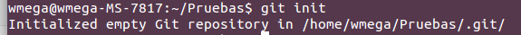2.-Ahora que ya disponemos de un repositorio,comprobamos el estado de este git status
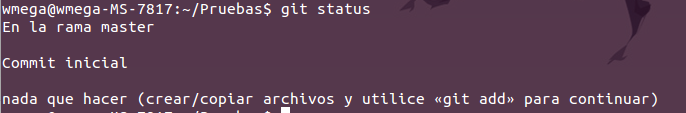3.-Creamos un archivo de prueba.
4.- Utilizamos el comando git status para comprobar y descubrir la aparición de nuestro nuevo archivo
 5.Ahora debemos añadir el archivo al “stage area”
git add “nombreDelArchivo”
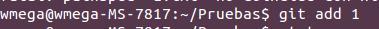
5.Ahora debemos añadir el archivo al “stage area”
git add “nombreDelArchivo”
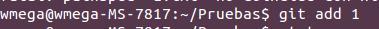
6.volvemos a comprobar con git status,la ausencia del archivo en el directorio principal
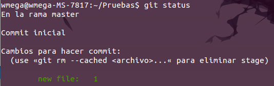7.Con los archivos terminados,podemos utilizar git commit -m “nombre del proyecto” para añadirlos al repositorio final,donde serán utilizados
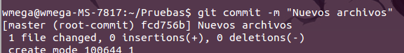8.Si queremos añadir varios archivos de la misma extensión,podemos utilizar git add *.”extensión” y después añadirlos al stage como paquete, git commit -m “todos los textos”
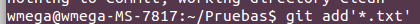9.Es posible consultar todos los cambios realizados,gracias a git log
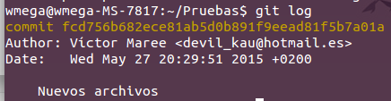10.Si es deseamos organizar nuestros archivos en diferentes lugares,podemos crear nuevas ramas.
La rama por defecto en GIT, es la "Master". Para crear una nueva u organizar las ya existentes,deberemos utilizar el comando "Branch".
Con "git branch",podemos visualizar las ramas existentes,y con "git branch 'nombrederama' " crear una nueva. 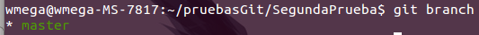 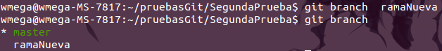
11.Si tenemos varios archivos con el mismo nombre,pero uno de ellos,mas reciente,contiene cambios,podemos compararlos con "git diff 'nombreDelArchivo' "
12. Si deseamos movernos a una rama: git checkout [nombreDeLaRama]
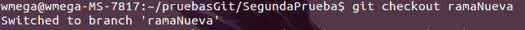13. Si lo que queremos es obtener el contenido de una rama: git merge [nombreDeLaRama]
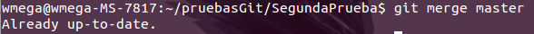- Si queremos tener un nuevo repositorio en GitHub usaremo Git Try. Y para usarlo, tendremos que añadir un repositorio remoto, con un comando que empezara por git remote, un nombre remoto y una URL del repositorio. Por ejemplo: git remote add origen https://github.com/try-git/try_git.git.
- Cuando tu proyecto se encuentra en un estado que quieres compartir, tienes que enviarlo a un repositorio remoto. El comando que te permite hacer esto es: git push [alias] [branch].
- Y para comprobar si han hecho cambios en nuestro repositorio GitHub es el comando: git pull. Un ejemplo claro es el siguiente: git pull origin master.
- Otro comando útil que tiene git es que puedes ver las modificaciones que ha habido respecto a la ultima vez. El comando que permite hacer esto es: git diff --staged.
Para retirar archivos que se han añadido en git se usa: git reset [file].
Pero git reset no quita el archivo del todo, simplemente no lo podemos visualizar. Por eso los archivos se pueden cambiar de nuevo a la forma en que estaban en la ultima confirmación mediante el comando: git checkout -- [destino].